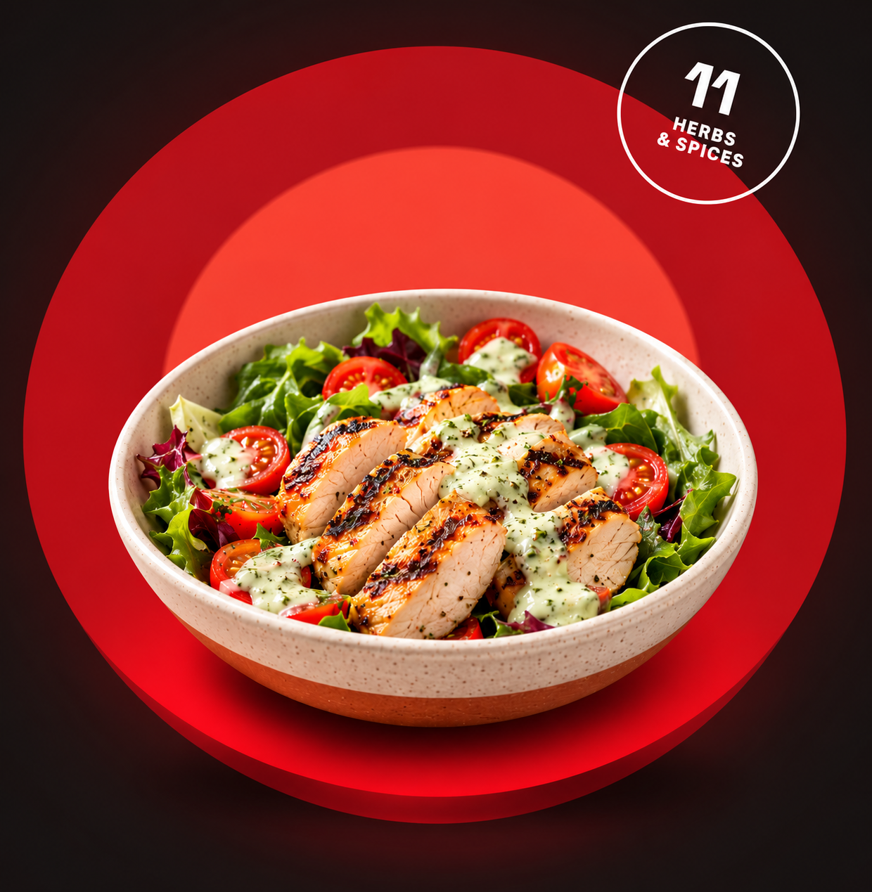

CHAPTER 011952
KENTUCKY
FRIED
CHICKEN●
FRIED
CHICKEN●
The Roadside Kitchen
Harland Sanders starts serving chicken at his gas station in Corbin, Kentucky.
Retro, small-town, handwritten energy.The new KFC is live
We kept the bold 11-herb spirit and made room for more of what makes you feel good. Fast food, treated like a big feast.

Before the new drop
Every era left a mark. Take the long way around — from one roadside kitchen to a whole new way to feast.
Harland Sanders starts serving chicken at his gas station in Corbin, Kentucky.
Retro, small-town, handwritten energy.KFC spreads across the country and the Colonel becomes an icon in a white suit.
Classic red-and-white, bold and confident.Drive-thrus, family buckets, and fast food at full volume.
Loud, saturated, peak fast food.Greasy reputation, stale stores, weird menu experiments, and US customers drifting away.
Dingy, muted, intentionally uncomfortable.The rebrand and the Colonel's five new menu items.
Clean, modern, health-conscious launch.Keep the feast.
Change the feeling.